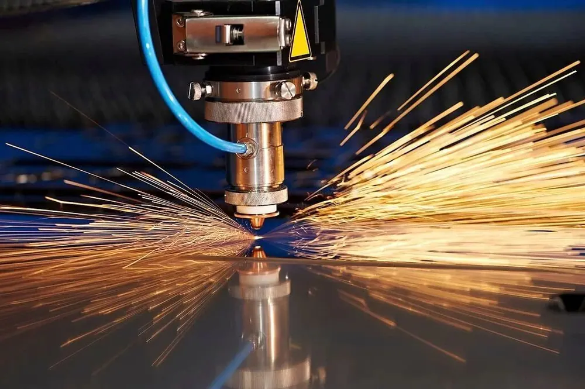

Lazer ışını belirli bir noktada malzemeye tamamen nüfuz ettiğinde asıl kesim başlar. Lazer sistemi seçilen geometriyi takip ederek işlem sırasında malzemeyi ayırır. Uygulamaya bağlı olarak proses gazı kullanımının sonuçlara olumlu etkisi olacaktır.
Lazer kesme makinesinin tarihçesi
Alışık olduğumuz lazer teknolojisi birçok işlemi gerçekleştirebilen bir sistemdir. Aynı makine, örneğin lazer kesim ve lazer kazıma kapasitesine sahiptir. Gerçekten çalışan ilk lazer 1960’lardan kalmadır, ancak o zamanlar pek kullanışlı değildi.
Bu yeni teknolojiyle çalışmak, kullanımı kolay sistemlerde zaman aldı. Ancak lazer ışınının işlevleri ve yetenekleri açıktır. Yalnızca tek bir dalga boyunda güçlü, dar bir ışın üretme yeteneği, düzinelerce endüstride potansiyel uygulamalara sahip olduğu anlamına gelir.
Lazer ışınlarıyla ilgili yeni bilimsel keşifler bilim camiasında ve toplumda kafa karışıklığına neden oluyor ve insanlar bu yeni teknolojinin ne kadar ileri gideceğini tahmin edemiyor. Son gelişmeler ulusal gazetelerde sıklıkla yer alıyor. Lazer kesim teknolojisinin avantajları 1960’lı yıllarda doğru bir şekilde gösterildikten sonra, kısa sürede onlarca endüstride yaygın olarak kullanılmaya başlandı.
1965 yılında elmas madenlerinde benzer iki kesme ve delme yöntemi kullanıldı ve 1967’de İngilizler daha büyük ölçekte lazer kesme teknolojisini başlattı. Western Electric hızla lazer kesim makineleri üretti ve 1970’lerde havacılık endüstrisine başarıyla girdi. Bu arada, 1970’lerin başında metaller de dahil olmak üzere çeşitli malzemeleri kesmek için gazlı lazer kesim kullanıldı. 1980’lerde dünya çapında çeşitli endüstrilerde toplam 7,5 milyar dolarlık maliyetle 20.000 ticari lazer kesim makinesi kuruldu.
Profesör Bill Steen, “Lazer Malzeme İşleme” dergisinde, lazerin icadından sonra yeni bir sanayi devrimine girdiğimizi yazdı.
Lazer makineleri nasıl çalışır?
Lazer ışınının odaklanması, lazer kesim kafasında bulunan özel bir mercek veya konik ayna ile yapılabilir. Odak şeklinin ve o noktadaki enerji yoğunluğunun mükemmel şekilde yuvarlak, pürüzsüz ve nozül üzerinde ortalanmış olması için ışının tamamen odaklanmış olması gerekir. Geniş huzmeyi belirli bir noktaya odaklayarak o noktadaki ısı yoğunluğu artırılabilir.
Güneş ışınlarını yapraklara odaklamak ve ne tür bir alev yaratabileceğini görmek için büyüteç kullanmayı düşünün. Şimdi 6 kW’lık enerjiyi tek bir yerde yoğunlaştırmayı düşünün ve o yerin ne kadar sıcak olabileceğini hayal edin.
Yüksek güç yoğunluğu malzemenin hızlı ısınmasına, erimesine ve kısmen veya tamamen buharlaşmasına neden olabilir. Yumuşak çeliği keserken, lazer ışınından gelen ısı, tipik bir “oksijen yakıtı” yanma sürecini başlatmak için yeterlidir, böylece ortaya çıkan yüksek kesme gücü ışın, metali kolayca kesebilir. Paslanmaz çelik veya alüminyumu keserken, lazer ışını yalnızca malzemeyi eritir ve erimiş metali eski haline getirmek için yüksek basınçlı nitrojen kullanılabilir.
Lazer kesim makinesinde lazer kesim kafası, kesilecek metal parçaların hareket ettirilmesiyle kolayca kesilebilir. Kapasite yükseklik ayar sistemi, açık uç ile kesme tahtası arasındaki mesafeyi koruyabilir. Kesim kalitesi açısından bu mesafenin önemi çok önemlidir çünkü odak iyi ayarlanmadığı takdirde verim alınamaz.
Odağı doğrudan panelin üstüne, üstüne veya altına yükselterek veya azaltarak kırpma kalitesini artırabilir veya azaltabilirsiniz. Birçok değişken kesim kalitesini etkiler ancak tüm bu değişkenler makul bir şekilde kontrol edilirse lazer kesim işlemi yüksek kaliteli, güvenilir ve hatasız olacaktır.
Lazer makinelerinin türleri
Lazer markalama makinelerinin farklı türleri bulunmaktadır. Yapılacak işe göre makul bir markalama makinesi satın alınmalıdır. Bu lazer markalama makinelerini kullanmak istiyorsak.
Fiber lazer markalama makinesi, YAG/vanadat markalama makinesi, CO2 karbondioksit lazer markalama makinesi, ultraviyole markalama makinesi ve yeşil lazer markalama makinesi. Bu açılardan YAG/eski lazer markalama makineleri artık bilinmiyor. Düzenli bakım gerektirmesi ve yüksek kapasiteli özel soğutma ekipmanları (su soğutma) gerektirmesi nedeniyle bakım maliyetleri yüksektir.
Fiber lazer markalama makineleri kullanıma sunulduğunda hızla YAG/eski lazerlerin yerini aldı. Bakım gerektirmez, ekonomik ve hızlıdır. Tüm metal özellikleri için ideal olan bu ürünler aynı zamanda çoğu plastik ürünü de markalayabilir.
UV ultraviyole lazer markalama makinesi 355nm lazer işleyebilir ve plastik için uygundur. CO2 karbondioksit lazer markalama makinesi 10600nm lazer dalga boyunda çalışabilir ve ahşap, deri ve cam gibi organik malzemeleri markalamak için uygundur.